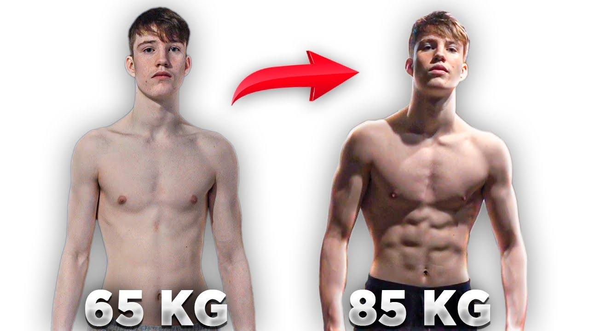
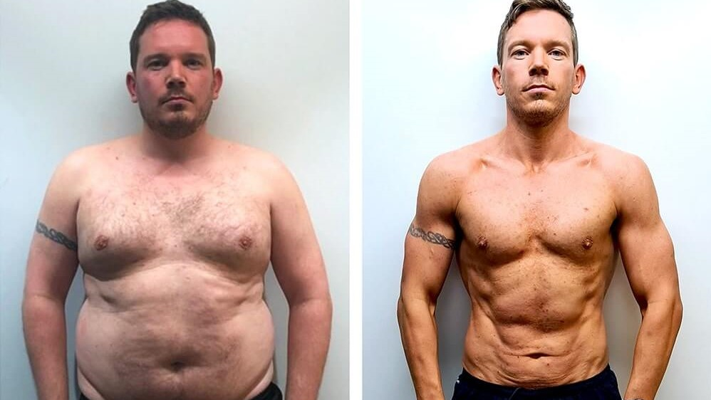

Gain Weight
Weight gain refers to an increase in body weight, typically due to an increase in overall body mass, including both fat mass and muscle mass. While weight gain can occur for various reasons, such as hormonal imbalances or certain medical conditions, in this context, we'll focus on weight gain associated with an increase in body fat.
Loss Fat
Fat loss, also known as weight loss, refers to the reduction of body fat through a combination of diet, exercise, and lifestyle modifications. It involves losing excess adipose tissue while preserving or gaining lean muscle mass. Fat loss is often pursued for health reasons, improved aesthetics, or to achieve a desired body composition.